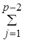

Дитерминирланган усули
Айтайлик, шундай х – бутун сон топилсинки, натижада куйидаги тенглик ўринли бўлсин:
ах b (mod р) (1)
Бу ерда р-туб сон ва (1) тенглама (Z/pZ) группада караляпти.
(1) тенгламанинг ечими x =log a b - ни куйидаги формула оркали топиш мумкин:
log a b

Бирок бу формула билан ечимни топиш масаласи бевосита «мумкин бўлган барча холатларни кўриб чикиш» каби усулга ўхшаш бўлгани учун хам амалда ушбу формула кўлланилмайди. Куйида келтириладиган алгоритм эса хисоблашлар сонини кискартириб ечимни топишнинг самарали усулини беради.
1-кадам. Куйидаги сон хисоблансин Н=[p1/2]+1
2-кадам. Куйидаги сон хисоблансин СаН(mod p)
3-кадам. u, 1uH сонли кийматлари учун Сu(mod p) жадвал тузинг.
4-кадам. Кейинги жадвал эса b*аv(mod
p), 0 v
v H кийматлар учун
тузилиб тартиблансин.
H кийматлар учун
тузилиб тартиблансин.
5-кадам. Биринчи ва иккинчи жадвалда тенг чиккан u, v элементлар олинсин.
6-кадам. Жавоб сифатида: хН*u–v (mod p-1) олинсин.
Мисол-1. Куйидаги 3х15 (mod 17) ифодадан х ни топинг.
Ечиш: Бевосита текшириб кўриш мумкинки, х=6 ушбу тенгликни каноатлантиради. Хакикатан 36=729; 729=42*17 + 15.
Шуни таъкидлаш керакки, бизни факат бутун ечимлар кизиктиради. Шунинг учун хам (1) ифодадан бутун х ни топиш масаласи мураккаб хисобланади.
Бу мисолни ечиш жараёни юкоридаги алгоритм оркали куйидагича амалга оширилади.
1-кадам. Н=[ p1/2]+1, Н=5.
2-кадам. Са Н(mod p), С=35(mod 17) =5.
3-кадам. 5u(mod
17), 1 u
u 5 жадвал кийматларини хисоблаймиз:
5 жадвал кийматларини хисоблаймиз:
u=1, 5(mod 17) =5
u=2, 25(mod17) = 8
u=3, 125(mod 17) =6
u=4, 625(mod17) = 13
u=5, 3125(mod17) = 14
Бу кийматларни тартибласак: 5, 6, 8, 13, 14.
4-кадам.
15*3v(mod 17), 0 v
v 5 жадвал кийматларини хисоблаймиз
:
5 жадвал кийматларини хисоблаймиз
:
v=1, 45(mod 17) = 11
v=2, 15*9(mod 17) = 16
v=3, 15*27(mod 17) = 14
v=4, 15*81(mod17) = 8
v=5, 15*243(mod 17) = 7
Бу кийматларни тартибласак: 7, 8, 11, 14, 16.
5-кадам. Иккита жадвал натижалари устма-уст тушган u, v –элементларни танлаб оламиз. Яьни, u=2, v=4.
6-кадам. хН*u – v (mod p-1) яьни х5*–24(mod 16)=6(mod 16), Жавоб: x = 6.
Мисол 2. Берилган ифодадан х ни топинг 3х7 (mod 13).
Ечиш. Бевосита текшириб кўриш мумкинки, берилган тенгликни каноатлантирувчи бутун х сони мавжуд эмас. Буни хам юкоридаги алгоритм оркали текширамиз: а=3, b=7, p=13.
1) Н=[p1/2] +1, Н=4.
2) Са Н(mod p), С=34(mod 13)=3.
3) 3u(mod
13),
1 u
u 4 жадвал кийматларини
хисоблаймиз:
4 жадвал кийматларини
хисоблаймиз:
u=1, 3(mod 17) = 3
u=2, 9(mod17) = 9
u=3, 27(mod 17) = 10
u=4, 81(mod17) = 3
4) 7*3v(mod 13), 0 v
v 4 жадвал кийматларини хисоблаймиз
:
4 жадвал кийматларини хисоблаймиз
:
v= 0, 7 (mod 13) = 7
v=1, 21(mod 17) = 4
v=2, 21*3(mod 17) = 12
v=3, 7*27(mod 17) = 2
v=4, 7*81(mod17) = 4
5) Иккита жадвал натижалари устма-уст тушган u, v – элементларни танлаб оламиз. Бирок бундай кийматлар мавжуд эмас экан.
6) Жавоб, бутун ечим йўк деган хулосага келамиз.
Машклар. Куйидаги тенгликлардан x номаълум соннинг бутун ечимини топинг:
1) 2х7 (mod 11);
2) 5х11 (mod 13);
3) 7х3 (mod 17);
4) 5х1 (mod 19).